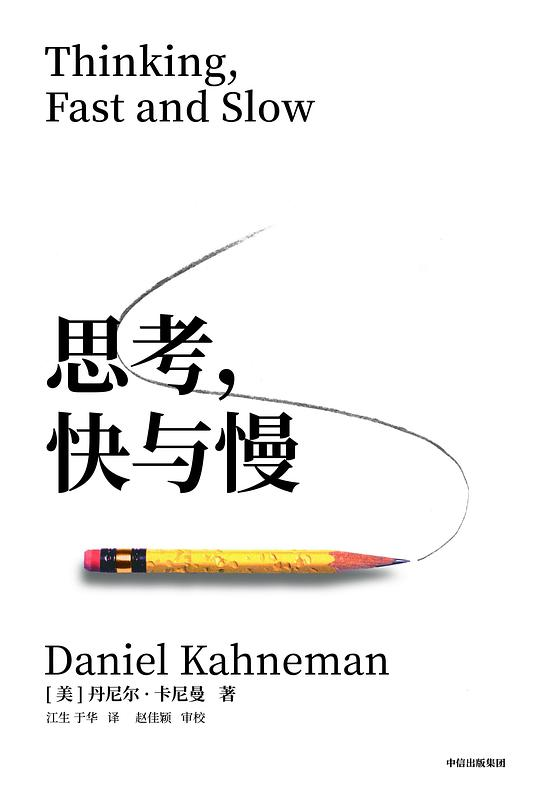

|
思考，快与慢 |
序言
本书讨论的很多内容都与直觉的成见相关。然而，对过失的关注并不意味着我们在诋毁人类智慧，这就如同关注疾病并非否定健康一样。大多数人在通常情况下都是身体健康的，他们做出的决策、采取的行动往往也是恰当的。生活中，我们往往跟着印象和感觉走，凭直觉引导行事，而且我们觉得这种直觉和偏好很可靠，这种自信通常也是正当合理的。不过，也不尽然。我们经常在自己出现失误的时候还信心满满，此时，旁观者往往比我们自己更容易发现这些失误。
因此，我和大家一起在“饮水机旁交谈”，其目的就是：给读者提供更丰富精确的语言来讨论他人乃至自己在判断和决策上的失误，提升发现和理解这些失误的能力。至少有些例子表明，正确的判断能有效地干预错误，以降低错误的判断和决策经常造成的损失。
关于判断与决策的有趣研究
那天，阿莫斯给同学们讲了密歇根大学正在研究的一个项目，这个项目试图回答这样一个问题，即人是否是优秀的直觉型统计者。我们都知道人是优秀的直觉型文法家：4岁的孩子虽然对世界上存在语法这件事完全没有概念，但她在说话时会努力遵循语法规则。人们对统计的基本原则是否也有这种直觉感受呢？阿莫斯指出，研究得出的结论是附条件的肯定（肯定，但是附有一定条件）。我们在研讨会上进行了激烈的讨论，最终认为较为稳妥的结论应当是附条件的否定（否定，但是附有一定条件）。
我们曾经很高兴地发现，我们俩对几个认识的孩子的未来职业的预想竟如出一辙。我们确信那个3岁大却善辩的孩子将来会做律师，那个有点呆板的孩子可能成为教授，那个体谅他人、循循善诱的孩子可以做个心理咨询师。当然，这些预测都是荒谬的，不过却很有意思。我们都清楚一点，那就是我们对这些孩子的直觉，来自他们自身的特点与特定职业特点的相似度。这种有趣的做法使我们当时就在脑海中创立了一种理论，即预测角色的相似度。此后我们做了许多实验来验证和详细阐述这个理论，下面便是一例。
在你思考下文中的问题时，请记住史蒂夫是从一个有代表性的样本库中被随机挑选出来的：
邻居如此描述这个孩子：“史蒂夫非常腼腆，少言寡语，很乐于助人，却对他人或者这个现实世界没有兴趣。他谦恭有礼，做事井井有条，中规中矩，关注细节。”请问史蒂夫更可能从事哪种职业，图书管理员还是农民？
很显然，史蒂夫的个性和典型的图书管理员有着惊人的相似，但这些与职业密切相关的统计学因素却很少有人关注。你们是否注意到，在美国，农民与图书管理员的比例超过20∶1.由于农民数量要多得多，所以那些“谦恭有礼，做事井井有条”的人也常常只能成为坐在拖拉机上的农民，而不可能是坐在图书馆咨询台后的管理员。但是，我们发现实验对象往往忽略这些相关的统计数据，而仅仅依赖于相似度来作出判断。于是，我们提出如下观点：人们把相似度当成一种简单的启发手段（简单地说就是经验法则）来作艰难的判断。对这种启发性手段的依赖必然会造成其预测带有成见（系统性失误）。
还有一次，阿莫斯和我想知道我们这所大学的教授们的离婚率是多少。我们注意到这个问题立即勾起了我们脑海中的记忆，我们俩不由想起自己知道或听说的那些离了婚的教授。于是我们就凭着脑海中这些事例对这个离婚率问题作出判断。我们把这种依靠记忆作出判断的方法称为可得性法则。在一项研究中，我们让调查对象回答一个简单的问题，这个问题与指定的一篇英语课文中的单词相关：
请思考字母 K.
请问字母K是更多地出现在单词的首字母位置上还是第三个字母位置上？
玩拼字游戏的人都知道，想起以某个字母开头的单词要比想起它在第三个字母位置上的单词容易得多。字母表中任何一个字母都适用于此法则。因此我们料到，尽管有些字母（比如K、L、N、R、V）出现在第三个字母位置上的频率更高，但是被调查对象的回答肯定会夸大所有字母出现在单词首字母位置上的频率。这种情形再一次表明，对经验法则的依赖必然会导致人们判断时的成见。例如，我曾一度认为通奸在政客中较普遍，在医生或律师中则没那么多见，但我最近对此产生了怀疑。我甚至曾为原来的那个“事实”作出若干解释，包括权力的催情效果、出门在外受到的诱惑等。而我最终意识到，政客的过错只不过更容易被曝光而已，而医生和律师的过错却少有人报道。我的直觉印象可以完全归咎于记者对主题的选择和我对可得性法则的依赖。
2012 第一版

2025 第二版